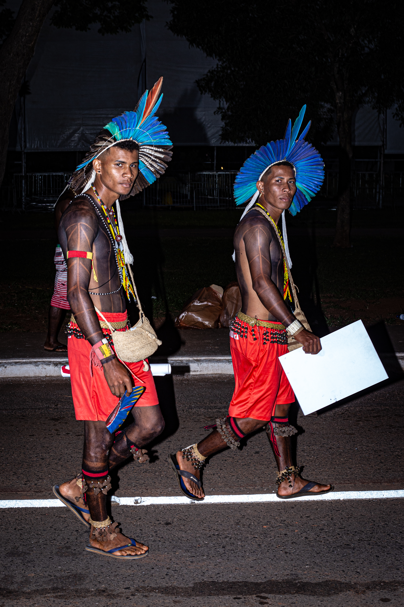

FOTOJORNALISMO • RUA • MODA • ENSAIOS
Não procuro o óbvio. Procuro o que provoca.
Fotografia documental, de rua, moda e ensaios autorais. Espontaneidade, pessoas, luz e linhas — com um olhar atento ao que foge do esperado.
Conheça meu trabalho
SOBRE MIM
Minha história começou com uma câmera em casa.
Minha tia, que me criou, sempre teve uma câmera fotográfica e uma filmadora. Na infância, ela deixava eu e meus irmãos explorar os equipamentos. Na adolescência, comecei a fotografar muito o meu irmão — e fui percebendo que tinha um olhar que queria desenvolver.
No terceiro ano do ensino médio, uma professora de artes pediu que apresentássemos um lado artístico nosso. Mostrei minhas fotografias, e ela me incentivou a procurar um curso. Naquela mesma semana, um instituto da minha cidade abriu uma oficina gratuita de fotografia com duração de seis meses.
Inscrevi-me e me destaquei no curso. Meu professor se tornou amigo e, depois, colega de trabalho: demos aulas de fotografia juntos no mesmo instituto.
Hoje, me atraem o fotojornalismo, a fotografia de rua e a moda. Gosto da espontaneidade e da aleatoriedade da rua, de composições visualmente complexas e de imagens que provocam. Na moda, me encanta o lado inventivo e provocador — como no universo de Cruella.
Vamos conversarPORTFÓLIO
Um olhar para o que escapa do óbvio.
Fotojornalismo, rua, moda e outros encontros com a imagem.
PROJETO EM DESTAQUE
Projeto Click
Brazlândia 2024
Esta série foi criada para o edital Projeto Click, da Co.liga com o Instituto BRB, a partir do tema “Arquitetura, Cerrado e Humanidade”.
As pessoas fotografadas são minha mãe, meu padrasto e minha irmã. O projeto foi premiado e recebeu nota máxima em todos os critérios avaliados pelos curadores.
1 / 11
SÉRIE
ATL 2024
SÉRIE
Slanvy 2023
SÉRIE
Santa Luzia/Estrutural 2023
SÉRIE
Câmara dos Deputados 2024
SÉRIE
Batalha da Estrutural 2023
PROJETOS E COLABORAÇÕES
Vamos conversar?
Para conversar sobre trabalhos, projetos ou colaborações, entre em contato por e-mail.
gabriellabarbosaneves@gmail.com